長期トレンド
JKMとJEPXシステムプライスの推移グラフ
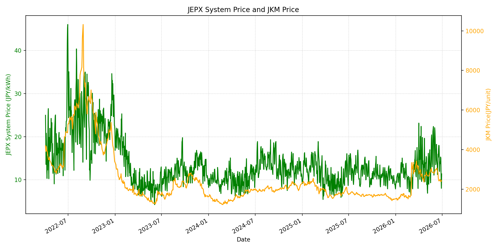
WTIの推移グラフ
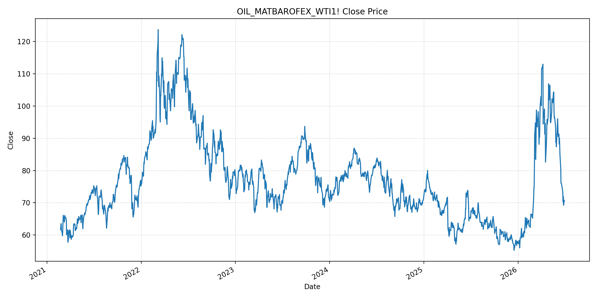
JEPXエリアプライスグラフ（直近一年分）
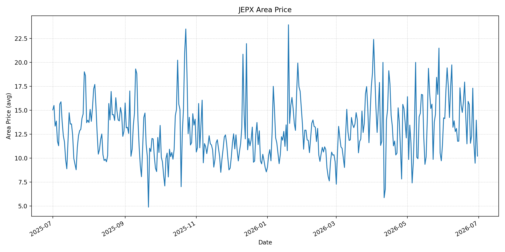
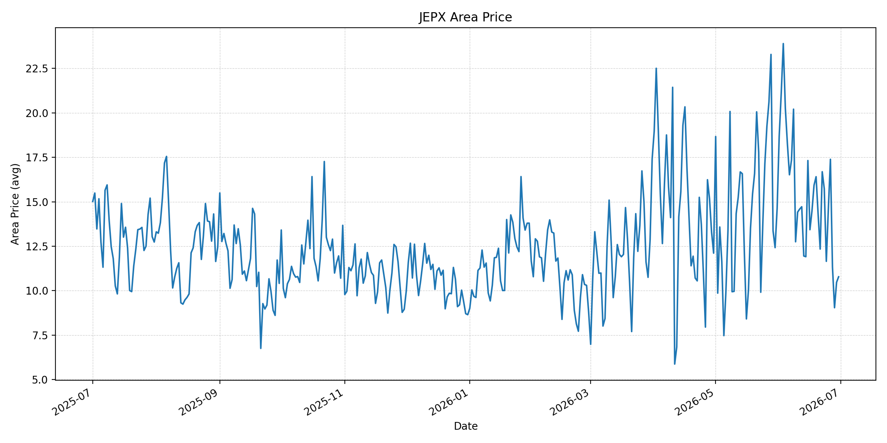
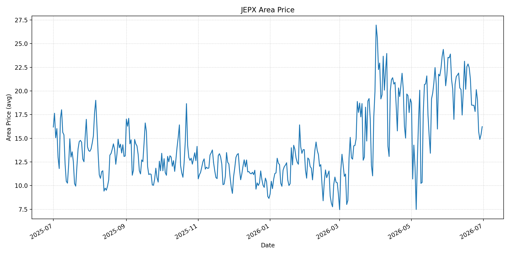
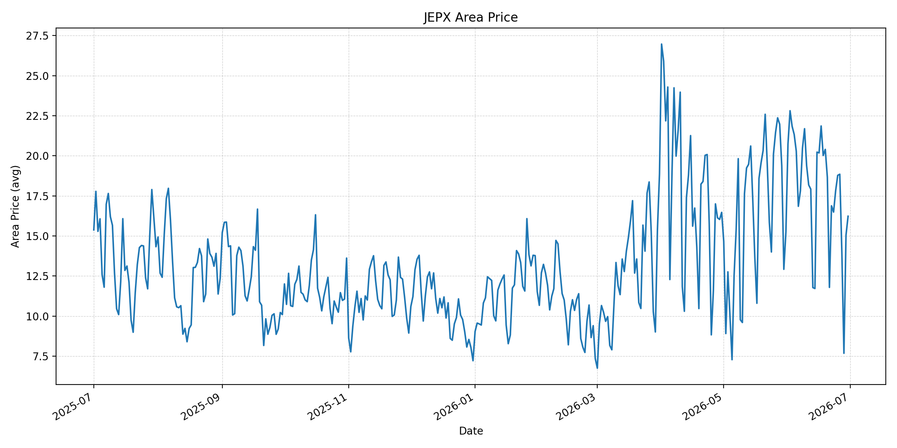
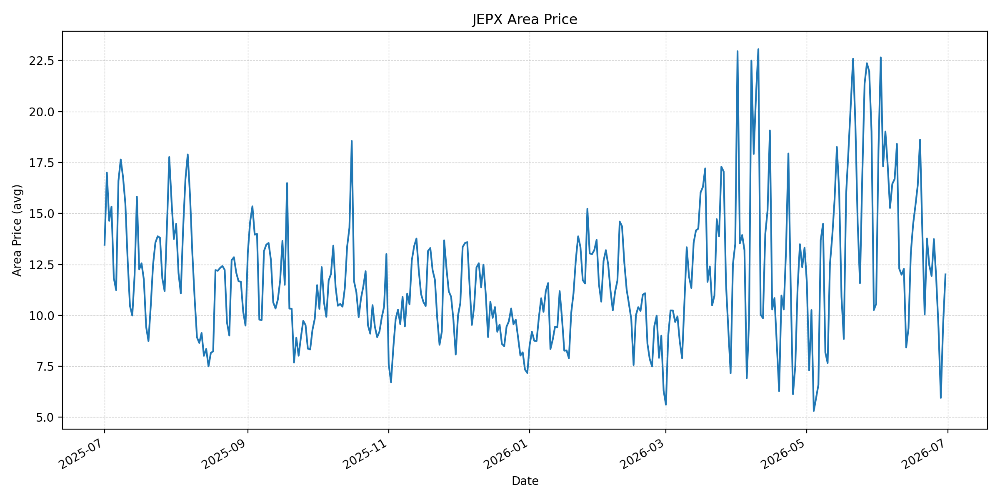
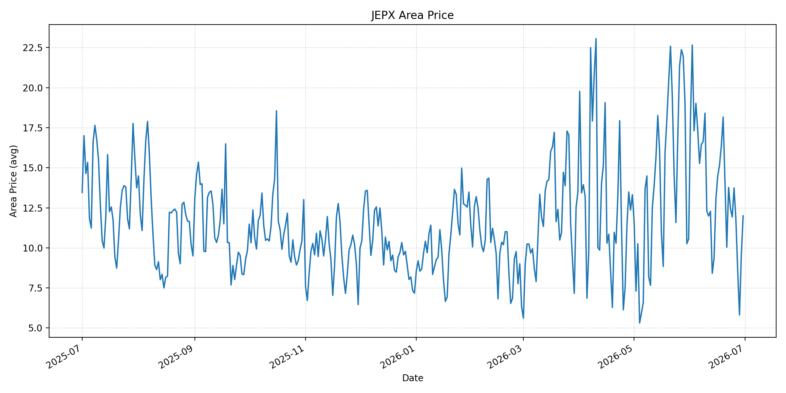
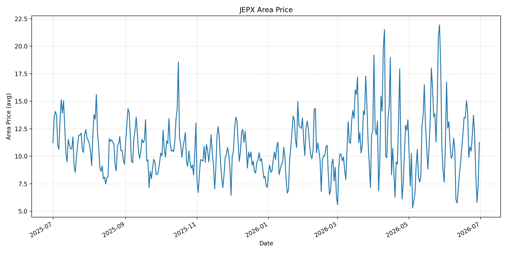
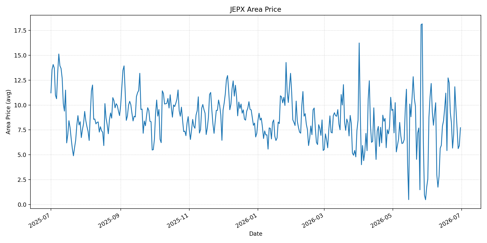
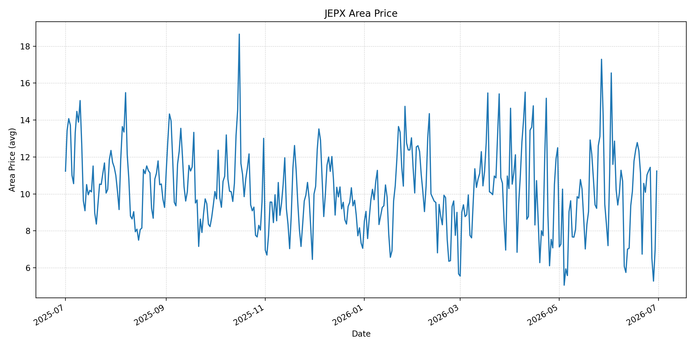
短期トレンド
JKMとJEPXシステムプライスの推移グラフ
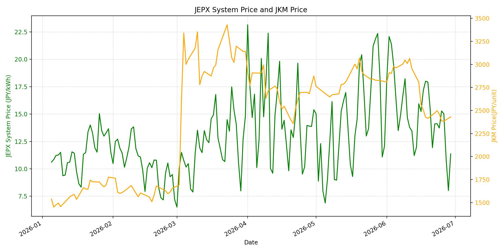
WTIの推移グラフ
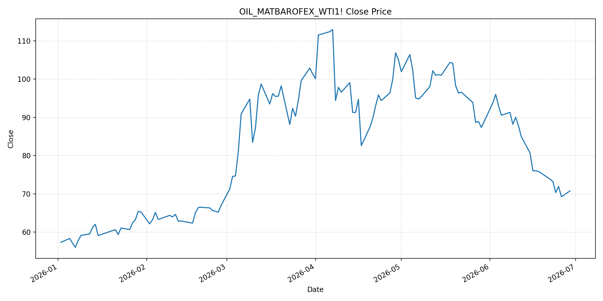
JEPXシステムプライス
JEPXは受渡日ベースの最新非空値で評価しています。最新値は 2026-06-30 分です。先週終値は 2026-06-23 時点の直近値、先月終値は 2026-05-31 時点の直近値で評価しています。
| エリア | 当日価格 | 前日価格 | 前日比（％） | 先週終値 | 先週比（％） | 先月終値 | 先月比（％） | 過去最高値 | 最高値比（％） |
|---|---|---|---|---|---|---|---|---|---|
| システム | 12.73 | 11.37 | 11.96 | 14.12 | -9.84 | 12.10 | 5.21 | 64.06 | -80.13 |
| 北海道 | 10.21 | 13.96 | -26.86 | 15.60 | -34.55 | 11.38 | -10.28 | 73.92 | -86.19 |
| 東北 | 10.78 | 10.47 | 2.96 | 15.73 | -31.47 | 14.64 | -26.37 | 84.92 | -87.31 |
| 東京 | 16.23 | 15.38 | 5.53 | 18.48 | -12.18 | 21.65 | -25.03 | 86.13 | -81.16 |
| 中部 | 16.23 | 15.05 | 7.84 | 16.49 | -1.58 | 15.25 | 6.43 | 52.06 | -68.83 |
| 北陸 | 12.01 | 9.59 | 25.23 | 12.46 | -3.61 | 10.56 | 13.73 | 46.48 | -74.16 |
| 関西 | 12.00 | 9.51 | 26.18 | 12.46 | -3.69 | 10.56 | 13.64 | 46.48 | -74.19 |
| 中国 | 11.26 | 7.32 | 53.83 | 10.48 | 7.44 | 7.66 | 47.00 | 46.48 | -75.78 |
| 四国 | 7.72 | 5.91 | 30.63 | 5.67 | 36.16 | 1.74 | 343.68 | 46.48 | -83.39 |
| 九州 | 11.24 | 6.98 | 61.03 | 10.09 | 11.40 | 7.20 | 56.11 | 40.54 | -72.28 |
LNG先物価格
最新値は 2026-06-29 の LNG(close) です。先週終値は 2026-06-22 時点の直近値、先月終値は 2026-05-29 時点の直近値で評価しています。
| 当日価格 | 前日価格 | 前日比（％） | 先週終値 | 先週比（％） | 先月終値 | 先月比（％） | 過去最高値 | 最高値比（％） |
|---|---|---|---|---|---|---|---|---|
| 2430.00 | 2385.00 | 1.89 | 2473.00 | -1.74 | 2826.00 | -14.01 | 10319.00 | -76.45 |
石油先物価格
最新値は 2026-06-29 の OIL(close) です。先週終値は 2026-06-22 時点の直近値、先月終値は 2026-05-29 時点の直近値で評価しています。
| 当日価格 | 前日価格 | 前日比（％） | 先週終値 | 先週比（％） | 先月終値 | 先月比（％） | 過去最高値 | 最高値比（％） |
|---|---|---|---|---|---|---|---|---|
| 70.75 | 69.23 | 2.20 | 73.86 | -4.21 | 87.36 | -19.01 | 123.70 | -42.81 |
ニュース
イラン情勢に関するニュース
- 2026年6月29日、APは、米国がドーハでの会合を主張する一方、イラン外務省は米国との交渉予定を否定し、専門家代表団のみがカタールへ向かうと報じました。米イランは60日以内の恒久合意を目指すものの、交渉日程そのものが不透明です。 参照: AP, 2026-06-29
- 同AP報道では、ホルムズ海峡、レバノン停戦、濃縮ウラン、制裁免除が主要な未解決論点とされています。米側は海峡が開いていると説明する一方、イラン側は自国当局との調整と指定航路の利用を求めています。 参照: AP, 2026-06-29
ホルムズ海峡経由の石油・LNGに関するニュース
- 2026年6月29日、Guardianは、イランがホルムズ海峡の管理を交渉上の主要カードとして維持し、オマーン沿岸に近い南側航路案に抵抗していると報じました。シンガポール船への攻撃後、UN/IMO主導の南側航路案は棚上げされています。 参照: The Guardian, 2026-06-29
- 2026年6月29日、MarketWatchは、米イランがホルムズ海峡をめぐる戦闘停止と和平協議再開で合意したとの見方から米株先物が上昇したと報じました。米当局者は海峡の船舶移動が現時点で制限されていないと説明していますが、管理権と通航コストは未解決です。 参照: MarketWatch, 2026-06-29
ホルムズ海峡経由でない石油・LNGに関するニュース
- 過去24時間で、日本向けの非ホルムズ新規大型調達やLNG長期契約を示す強い追加報道は確認できませんでした。足元の価格変動は、非ホルムズ供給拡大ではなく、ホルムズ航路の管理権、通航コスト、協議再開の有無が主因です。 参照: The Guardian, 2026-06-29
- APは、戦争前に世界の石油・ガスの約5分の1がホルムズ海峡を通っていたとし、海峡をめぐる米イランの認識差が供給リスクを残していると説明しています。非ホルムズ代替よりも、海峡運用ルールの安定が当面の焦点です。 参照: AP, 2026-06-29
日本国内のイラン戦争に関係するニュース
- 過去24時間で、JEPX制度、国内電力需給ルール、または日本政府の対イラン戦争関連対策を直接変更する主要な新規公表は確認できませんでした。
- 関連する国内材料として、経済産業省は2026年5月20日、2026年度夏季は全エリアで安定供給に最低限必要な予備率3％を確保できるため節電要請を実施しないと発表しています。一方で、国際情勢の変化、異常気象、火力発電所の地域集中はリスクとして明記されています。 参照: 経済産業省, 2026-05-20
インサイト
ニュース事項による日本の電力市場への影響（短期：数日〜1週間）
- JEPXシステムプライスは 12.73 円/kWhで前日比 11.96% と反発しました。ただし先週比は -9.84%、東京も 16.23 円/kWhで先週比 -12.18% と低く、燃料安の影響はまだ残っています。
- OILは 70.75 で前日比 2.20%、LNGは 2430.00 で前日比 1.89% と小反発しました。APとGuardianが示すホルムズ管理の対立は、燃料価格の下げ止まり要因ですが、先週比ではOIL -4.21%、LNG -1.74% と燃料コストはまだ低下方向です。
- 中部は 16.23 円/kWh、中国は 11.26 円/kWh、九州は 11.24 円/kWhで前日比が大きく上昇しました。数日〜1週間では、協議再開期待が燃料高を抑える一方、海峡管理をめぐる発言でエリア別スポットのボラティリティが出やすいです。
ニュース事項による日本の電力市場への影響（長期：1ヶ月〜半年）
- ホルムズ通航が制度的に安定すれば、LNGは過去最高値比 -76.45%、OILは -42.81% と低い水準にあり、日本の燃料費見通しは改善しやすいです。一方、イランが海峡管理を交渉カードとして維持する限り、保険、船腹、航路指定のコストは残ります。
- Guardianが指摘するオマーン案とイラン主導案の競合は、1ヶ月〜半年の調達リスクです。通航料ではなく航行サービス料として整理できるか、米国・オマーン・イランの実務合意が成立するかが、LNG・石油調達コストを左右します。
- 国内では節電要請なしの前提が維持されていますが、システム価格は先月比 5.21%、中国は 47.00%、九州は 56.11% と地域差が大きいです。燃料安だけでなく、夏季需要と地域別供給力がJEPXを下支えする可能性があります。